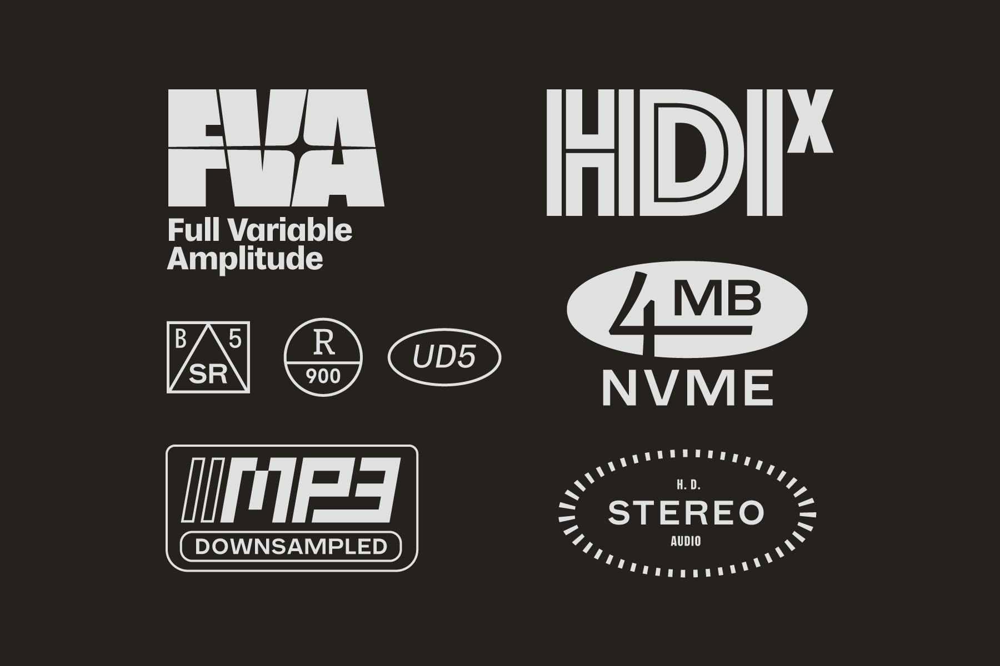

Logos, stickers & details for album art (2020)
Related to my earlier logos for sci-fi corporations. These marks were designed to be used for detailing on album artwork, reminiscent of the various label & recording stickers from (particularly) early CD & digital releases.
Used in the cover artwork for Bless the Internet.
